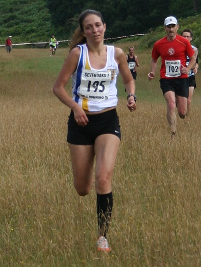
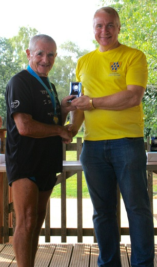

James Mason and Jacqui O'Reilly were third, Jim Fitzmaurice was first M70 and Sevenoaks AC won both the men's and women's team prizes at the Sevenoaks Seven race on bank holiday Monday 29th September. The Sevenoaks AC results were as follows:
| Pos- ition | Bib- No. | Finish Time | Chip Time | Name | Gen- der | Cat- egory | Club or Team | Rank |
|---|---|---|---|---|---|---|---|---|
| 3 | 24 | 00:41:20 | 00:41:19 | JAMES MASON | M | SM | Sevenoaks AC | 1 |
| 6 | 13 | 00:44:10 | 00:44:04 | MATTHEW WALKER | M | SM | Sevenoaks AC | 2 |
| 12 | 73 | 00:47:06 | 00:47:01 | DANIEL WITT | M | M40 | Sevenoaks AC | 3 |
| 17 | 275 | 00:47:38 | 00:47:33 | LEE LINTERN | M | SM | Sevenoaks AC | 4 |
| 19 | 134 | 00:47:46 | 00:47:44 | ANDREW MEAD | M | M40 | Sevenoaks AC | 5 |
| 24 | 169 | 00:48:24 | 00:48:17 | JOHN STEVENS | M | M50 | Sevenoaks AC | 6 |
| 34 | 138 | 00:50:26 | 00:50:19 | ANTHONY WALDRON | M | M40 | Sevenoaks AC | 7 |
| 40 | 180 | 00:51:25 | 00:51:22 | TED SCOTT | M | M50 | Sevenoaks AC | 8 |
| 43 | 195 | 00:51:44 | 00:51:42 | JACQUELINE O'REILLY | F | SW | Sevenoaks AC | 9 |
| 51 | 38 | 00:52:37 | 00:52:14 | CHRIS HALL | M | SM | Sevenoaks AC | 10 |
| 90 | 49 | 00:56:41 | 00:56:18 | NEIL PEARCE | M | M40 | Sevenoaks AC | 11 |
| 94 | 219 | 00:57:25 | 00:57:01 | CHRIS RANDALL | M | SM | Sevenoaks AC | 12 |
| 106 | 237 | 00:59:01 | 00:58:54 | NICOLA THOMPSON | F | W35 | Sevenoaks AC | 13 |
| 107 | 7 | 00:59:09 | 00:59:01 | GRAZIA MANZOTTI | F | W45 | Sevenoaks AC | 14 |
| 110 | 142 | 00:59:18 | 00:58:59 | SOPHIE LAMB | F | SW | Sevenoaks AC | 15 |
| 131 | 81 | 01:01:46 | 01:01:42 | LIONEL STIELOW | M | M60 | Sevenoaks AC | 16 |
| 173 | 128 | 01:06:17 | 01:06:08 | JAMES FITZMAURICE | M | M70 | Sevenoaks AC | 17 |
| 212 | 261 | 01:12:29 | 01:12:04 | SYLVIA LEWIS | F | W55 | Sevenoaks AC | 18 |
The full results are here.